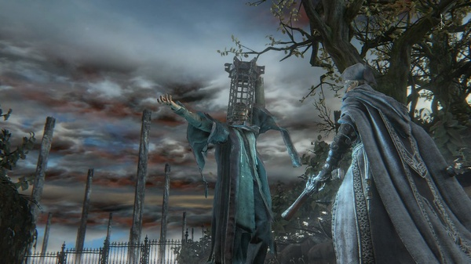
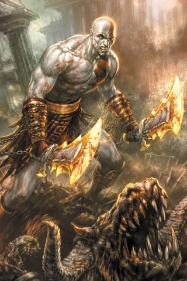
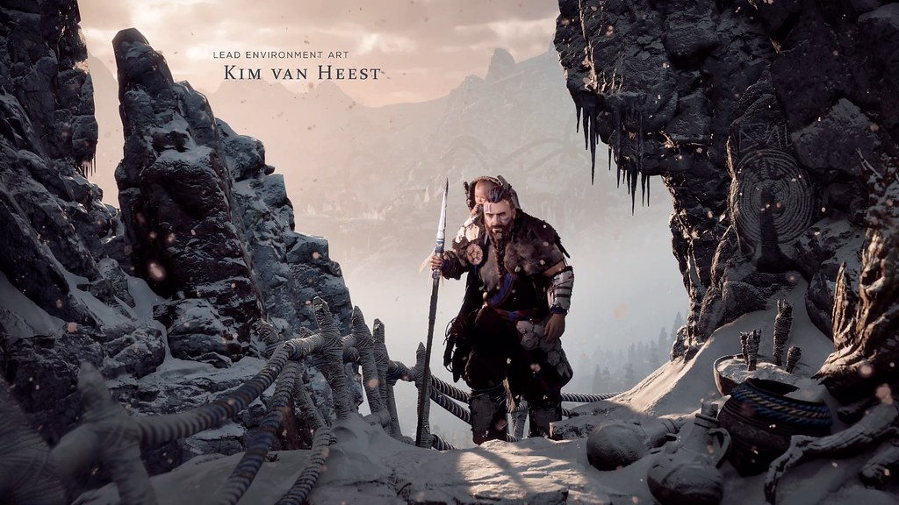

Home
Other Games by Team Ico
Other Games by Sony
Other Games by Japan Studio
Other Games by Sony Interactive Entertainment
Ever since 1994, Sony has been responsible for making hundreds of games possible. Their affiliation with The Last Guardian was no different. Here are some more of their iconic games.
Bloodborne
Bloodborne is an action role-playing game made in 2015.

"Bloodborne stuff" by Marco Hazard is licensed under CC BY-SA 2.0
God of War
God of War is an action-adventure game made in 2018.

"God of War iPhone wallpaper" by xploitme is licensed under CC BY-SA 2.0
Horizon Zero Dawn
Horizon Zero Dawn is an action role-playing game made in 2017.

"Game Ref: Horizon: Zero Dawn" by Clinton Crumpler is licensed under CC BY 2.0